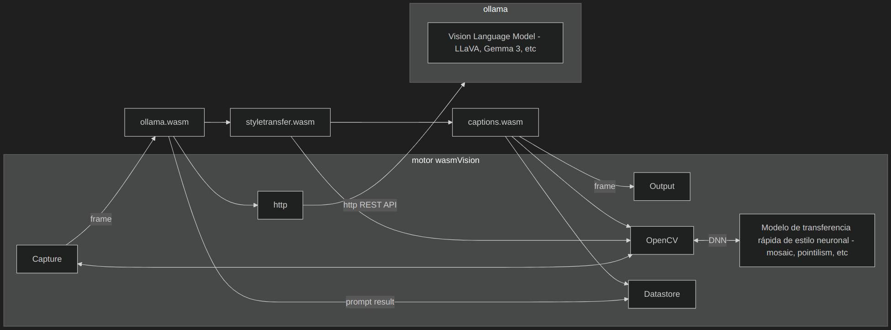

Ojos que ven:
Visión Artificial con WebAssembly, Go, y TinyGo
GoMAD - Mayo 2025
Ron Evans - @deadprogram
fed: @deadprogram@social.tinygo.org
bsky: @deadprogram.com
Ron Evans (@deadprogram)
Tecnólogo de alquiler
tecnólogo de alquiler
hybridgroup.com
El software que pone
tu hardware para trabajar
Proyectos de código abierto
tinygo.org

GoCV.io
Visión artificial usando WebAssembly
¿Pero que es WebAssembly?
bytecode
interfaces
wasm en navegadores
La arquitectura de wasm en navegadores
wasm en la nube
Webassembly System Interface (wasi)
La arquitectura de wasi
wasm en dispositivos integrados
wasm-unknown
Visión artificial usando WebAssembly
Sistemas industriales de visión artificial.
Dispositivos Linux integrados
Dispositivos embedded
Clúster de computación
Agricultura
Transporte
Energía
Seguridad
Fabricación
Ventas Minoristas
Muchas aplicaciones de visión artificial tienen una estructura básica muy similar
muchas partes diferentes que integrar
difícil ejecutarlo en diferentes tipos de máquinas
difícil de actualizar
cierta necesidad de personalización
wasmvision.com
Empezar con la visión artificial mediante WebAssembly
Capturar video
Procesarlo
guardarlo o transmitirlo
'wasmvision' interfaz de línea de comandos
El motor de wasmVision
Los procesadores wasmVision
El motor está escrito en Go
OpenCV
FFmpeg
GStreamer
GoCV
Wazero
Todo esto combinado en un binario enlazado estáticamente*
*Solo cuando se ejecuta en Linux sin soporte de GPU

La arquitectura de wasmVision
Los procesadores de wasmvision
Pueden escribir usando Go (TinyGo)
Rust
C
wasmCV
wasmcv.org
conjunto de interfaces WASM para visión artificial
definido usando wit (wasm interface type)
WIT es parte del modelo de componentes WASM
Sin embargo
wasmVision no utiliza el modelo de componentes WASM
utiliza WIT para generar documentación y wrappers de interfaz de cliente
wypes
github.com/orsinium-labs/wypes
Firefly Zero
fireflyzero.com
cómo funciona la visión artificial

Mat

Mat RGB

Mat Multidimensional

cómo funciona OpenCV/GoCV
cómo funciona wit
interfaces
tipos básicos
record
resource
world.wit
Ver el código
Todo se genera a partir de los archivos .wit
wasmCV Documentación
Ver documentación
wasmVision procesadores - go
package wasmcv
wit-bindgen-go
go.bytecodealliance.org
tinygo build -o blur.wasm -target=wasm-unknown --no-debug ./blur
Blur procesador (Go)
Ver el código
Ejecutar el procesador Blur (Go)
wasmVision procesadores - rust
crate wasmcv
wit-bindgen
github.com/bytecodealliance/wit-bindgen
cargo build --target wasm32-unknown-unknown --release
Blur procesador (Rust)
Ver el código
Ejecutar el procesador Blur (Rust)
wasmVision procesadores - c
#include "wasmcv/imports.h"
wit-bindgen
github.com/bytecodealliance/wit-bindgen
/opt/wasi-sdk/bin/clang --target=wasm32-unknown-unknown -O3 \
--sysroot="${WASI_LIBC_SYSROOT}/lib/wasi-libc/sysroot" \
-z stack-size=4096 -Wl,--initial-memory=65536 \
-I$WASMCV_C_COMPONENTS_PATH -I$WASMVISION_C_COMPONENTS_PATH \
-o ../blurc.wasm process.c \
$WASMCV_C_COMPONENTS_PATH/wasmcv/imports.c $WASMCV_C_COMPONENTS_PATH/wasmcv/imports_component_type.o \
$WASMVISION_C_COMPONENTS_PATH/wasmvision/platform.c $WASMVISION_C_COMPONENTS_PATH/wasmvision/platform_component_type.o \
-Wl,--export=process \
-Wl,--export=__data_end -Wl,--export=__heap_base \
-Wl,--strip-all,--no-entry \
-Wl,--unresolved-symbols=ignore-all \
-nostdlib \
Blur procesador (C)
Ver el código
Ejecutar el procesador Blur (C)
Procesadores
Proporcionar bloques de construcción básicos
Se pueden conectar entre sí
Puedes crear tus propios procesadores
Un recorrido rápido por algunos procesadores incluidos
asciify procesador (Go)
Ver el código
Ejecutar el procesador asciify
plataforma wasmVision
registros
configuración
http
almacén de datos
Subtítulos creativos
Generación de subtítulos en vivo
con un toque artístico
La arquitectura de Subtítulos creativos
config.toml
Ver la configuración
ollama.wasm
Ollama
Vision Language Models (VLMs)
Large Language and Vision Assistant Model (LLaVA)
La arquitectura de ollama.wasm
ollama procesador (Go)
Ver el código
Forward Neural Network (FNN)
Fast Neural Style Transfer
La arquitectura de style-transfer.wasm
style-transfer procesador (Go)
Ver el código
La arquitectura de captions.wasm
captions procesador (Go)
Ver el código
